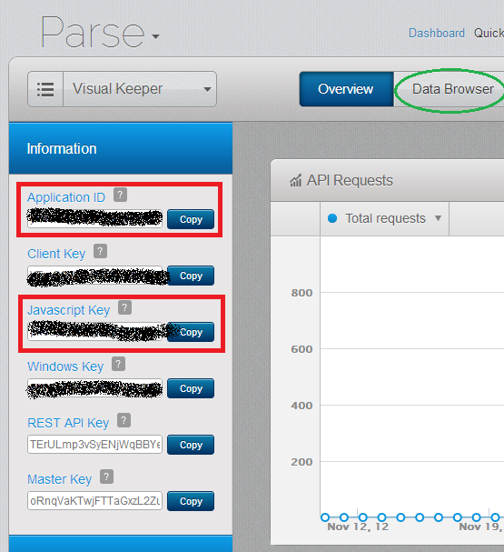

Data Storage - Parse.com
For this app we are going to be storing all of the task text data with the Parse API. Parse.com is a cloud data service that makes it really easy to upload and store data. After you create an account at Parse.com you can create your app data storage. After you make your app you will see a screen like this when you view it.
I have put a red box around the keys we will need later, the Application ID and Javascript Key. Before we can work with the API we have to download the parse javascript file. You can find it here Parse.com Downloads.
Once you have the parse javascript file make sure it is in your assets folder so that you can call it in your html file.
<script type="text/javascript" src="js/parse-1.1.13.min.js"></script>
That is the version of Parse that we used for Visual Keeper but you may use a different one but I cannot speak for the compatibility of the code for other versions.